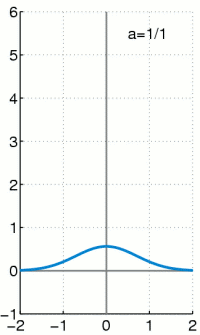

2024-01-16
Signals and Systems#
First, we will explain the basic concept of signals and system#
What is an object?
What are signals?
What does “continuous” mean?
What is a system?
What is a “response”?
What is a “measurement”?
Are the “responses” some type of “signals”?
Are the “responses” continuous?
What is “shift-invariant”?
What does “spread” mean in signal processing?
What is “point impulse”?
What is a “point spread function” (PSF)?
What is \(\delta(x,y)\)
What is a “linear shift-invariant” (LSI) system?
What is “convolution” in signal processing?
What are “continuous” and “discrete” signals?
Are these continuous or discrete signals?
What is “sampling”?
Further discussion of sampling
Further discussion of sampling: Spatial resolution and dynamic range of images
Further discussion of sampling: Nyquist frequency of sampling
Second, we will discuss mathematical presentation of signals and system#
Continuous signal (2D): \(f(x,y), \; -\infty \leq x,y \leq \infty \)
Continuous signal (1D): \(f(x), \; -\infty \leq x \leq \infty \)
Delta function: one-dimensional form
\(\delta(x) = 0, \; x \neq 0 \)
\(\int_{-\infty}^\infty f(x) \delta(x) dx = f(0) \)

light detection; shutter speed; exposure time
light detection; pinhole size
Delta function: two-dimensional form \(\delta(x,y) = 0, \; (x,y) \neq (0,0) \)
\(\int_{-\infty}^\infty \int_{-\infty}^\infty f(x,y) \delta(x,y) dx\,dy= f(0,0) \)
Sifting property \(\delta(x-x_0,y-y_0) = 0, (x,y) \neq (x_0,y_0) \)
\(\int_{-\infty}^\infty \int_{-\infty}^\infty f(x,y) \delta(x-x_0,y-y_0) dx\,dy= f(x_0,y_0) \)
Scaling property \( \begin{align*} & \int_{-\infty}^\infty \int_{-\infty}^\infty f(x,y) \delta(ax,by) dx\,dy \\ & =\frac{1}{ab} \int_{-\infty}^\infty \int_{-\infty}^\infty f(\frac{x}{a},\frac{y}{b}) \delta(x,y) dx\,dy \\ & = \frac{1}{ab}f(0,0) \\ & = \frac{1}{ab} \int_{-\infty}^\infty \int_{-\infty}^\infty f(x,y) \delta(x,y) dx\,dy \\ & = \int_{-\infty}^\infty \int_{-\infty}^\infty f(x,y) \frac{\delta(x,y)}{ab} dx\,dy \end{align*} \)
Therefore,
\(\delta(ax,by) = \frac{\delta(x,y)}{ab} \)
\(\delta(x,y)\) is an even function: When \(a=-1,\,b=-1\), we have \(\delta(-x,-y) = \delta(x,y)\)
Comb function
\(\mathrm{comb}(x,y) = \sum_{m = -\infty}^{\infty} \sum_{n = -\infty}^{\infty} \delta(x-m,y-n)\)
with m and n being integers
Comb and sampling function
\( \delta_s(x,y;\Delta x, \Delta y) = \sum_{m=-\infty}^{\infty} \sum_{n=-\infty}^{\infty} \delta(x-m\Delta x,y-n \Delta y) \)
Exercise show that
\( \delta_s(x,y; \Delta x, \Delta y) = \frac{1}{\Delta x \Delta y} \mathrm{comb} (\frac{x}{\Delta x}, \frac{y}{\Delta y}) \)
Rect function
\( \mathrm{rect}(x,y)= \left\{% \begin{array}% 1, & \textrm{for } |x| \lt \frac{1}{2} \textrm{ and } |y| \lt \frac{1}{2}\\ 0, & \textrm{for } |x| \gt \frac{1}{2} \textrm{ or } |y| \gt \frac{1}{2} \end{array}% \right. % \)
Exercise
Show that we can use the product
\( f(x,y)\, \mathrm{rect}(\frac{x-x_0}{X},\frac{y-y_0}{Y}) \)
to select that part of signal \(f(x,y)\) centered at a point \(f(x_0,y_0)\) of the plane with width \(X\) and height \(Y\), and set the rest to zero.
Sinc function (1-dimensional form)
\( \mathrm{sinc}(x)= \left\{% \begin{array}% 1, & x=0 \\ \frac{\sin (\pi x)}{\pi x}, & \textrm{otherwise} \end{array}% \right. % \)
Sinc function (2-dimensional form) \( \mathrm{sinc}(x,y)= \left\{% \begin{array}% 1, & x=0 \textrm{ and } y=0\\ \frac{\sin (\pi x) \sin (\pi y)}{\pi x y}, & \textrm{otherwise} \end{array}% \right. % \)
Note that \( \mathrm{sinc}(x,y) = \mathrm{sinc}(x) \, \mathrm{sinc}(y)\)
Homework: plot sinc waveform with python or matlab or any other computer program.
Exercise: Modify the code below to extend the range of x, and see how the sinc waveform changes
# Here we visualize sinc function for a given range of x
import numpy as np
import matplotlib.pyplot as plt
x = np.arange(-5,5,0.001)
print(f'x = {x}')
y = np.sin(np.pi * x) / (np.pi*x)
print(f'y = {y}')
plt.title("sinc waveform")
plt.xlabel("x")
plt.ylabel("sinc(x)")
plt.plot(x,y)
plt.show()
x = [-5. -4.999 -4.998 ... 4.997 4.998 4.999]
y = [3.89817183e-17 2.00039679e-04 4.00157431e-04 ... 6.00351328e-04
4.00157430e-04 2.00039678e-04]
System: input and output
A continous-to-continous system: input-output equation of system \( g(x,y) = S [f(x,y)] \)
A linear system
\( S\Bigg[\sum_{k=1}^K \omega_k f_k(x,y)] \Bigg] = \sum_{k=1}^K \omega_k S[f_k(x,y)] \)
Impulse response function or point-spread function (PSF)
\( h(x,y;x_0,y_0) = S[\delta(x-x_0,y-y_0)] \)
Superposition integral
\( g(x,y) = \int_{-\infty}^\infty \int_{-\infty}^\infty f(x_0,y_0) h(x,y;x_0,y_0)\, dx_0 \, dy_0\)
Shift invariance
\( \begin{align*} & g(x,y) = S[f(x,y)] \\ & g(x-x_0,y-y_0) = S[f(x-x_0,y-y_0)] \end{align*} \)
Linear shift-invariant (LSI): convolution integral
\( g(x,y) = \int_{-\infty}^\infty \int_{-\infty}^\infty f(x_0,y_0) h(x-x_0,y-y_0)\, dx_0 \, dy_0 \)
where \( h(x,y) = S[\delta(x,y)]\) and \(S[\delta(x-x_0,y-y_0)] = h(x-x_0,y-y_0)\)
Discussion: What is the difference between \(h(x,y;x_0,y_0)\) and \(h(x-x_0,y-y_0)\)
Linear shift-invariant (LSI): convolution equation
\( g(x,y) = h(x,y) * f(x,y) \)
Exercise (see example 2.2 of Prince and Links) Consider a continuous system with input-output equation \( g(x,y) = \frac{f(x,y)}{3} \)
Question: Is this system linear and shift-invariant?
Solution: If \(g'(x,y)\) is the response of the system to input \(\sum_{k=1}^K w_k f_k(x,y)\), then
\( \begin{align*} g'(x,y) & = \frac{\sum_{k=1}^K w_k f_k(x,y)}{3} \\ & = \sum_{k=1}^K w_k \frac{f_k(x,y)}{3} \\ & = \sum_{k=1}^K w_k g_k(x,y) \end{align*} \)
Therefore, the system is linear. If \(g'(x,y)\) is the response of the system to input \(f(x-x_0,y-y_o)\), then $\( g'(x,y) = \frac{f(x-x_0,y-y_0)}{3} = g(x-x_0,y-y_0)\)$ Therefore, the system is shift-invariant.
Homework: Consider a continous system with input-output equation \(g(x,y) = sin(x)f(x,y)\). Is this system linear and shift-invariant?
Explaining example 2.2 of Prince and Links:
Discussion of linearity
It would be easier that we have two 1D input function \(f_1(x)\) and \(f_2(x)\). According to the definition the response to each of those two 1D input waveforms will be
\( g_1(x) = S(f_1(x)) = \frac{f_1(x)}{3} \)
and
\( g_2(x) = S(f_2(x)) = \frac{f_2(x)}{3} \)
Now, assuming we have a new input waveform \(2f_1(x) + 4f_2(x)\), then its output function would be
\( S(2f_1(x)+4f_2(x)) = \frac{2f_1(x)+4f_2(x)}{3} \)
which could be further represented as \(2g_1(x)+4g_2(x)\).
Note the response of the new input waveform (\(2g_1(x)+4g_2(x)\)) has exactly the same linear combination pattern of the input \(2f_1(x) + 4f_2(x)\). Therefore we know the system is linear.
Discussion of shift-invariant
First. if \(g'(x,y)\) is the response of the system to input \(f(x-7,y-9)\), then according to the definition we know
\( g'(x,y) = \frac{f(x-7,y-9)}{3} \)
Second, by applying change of variable (i.e., replacing \(x\) with \(x-7\); and replacing \(y\) with \(y-9\)) to the original definition (\(g(x,y)=\frac{f(x,y)}{3}\)), we have
\( g(x-7,y-9) = \frac{f(x-7,y-9)}{3} \)
From the above two arguments, we now know that
\( g'(x,y) = g(x-7,y-9) \)
meaning that we are able to predict the response waveform of a shifted-waveform by simply shifting the known response. Therefore the system is shift invariant.
Third, you could find more material here:#
The first five videos of https://www.youtube.com/playlist?list=PLuh62Q4Sv7BUSzx5Jr8Wrxxn-U10qG1et
Slides from other professors: http://courses.washington.edu/phys428/lecture%20slides/Lecture02.1.pdf (which is part of Dr. Kinahan’s course: http://courses.washington.edu/phys428/ )